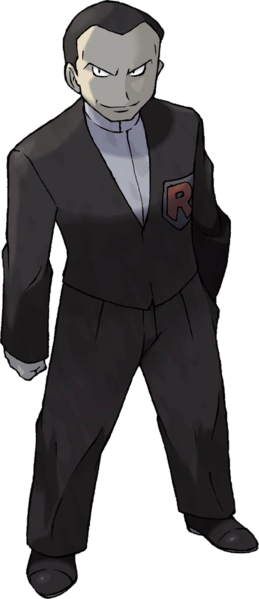

| Badge | Location | Gym Leader | Type Specialization |
|---|---|---|---|
|
Boulder Badge |
Pewter City Gym |

Brock |
Rock |
|
Cascade Badge |
Cerulean City Gym |

Misty |
Water |
|
Thunder Badge |
Vermillion City Gym |

Lt. Surge |
Lightning |
|
Rainbow Badge |
Celadon City Gym |

Erika |
Grass |
|
Soul Badge |
Fuchsia City Gym |

Koga |
Poison |
|
Marsh Badge |
Saffron City Gym |

Sabrina |
Psychic |
|
Volcano Badge |
Cinnabar Island Gym |

Blaine |
Fire |
|
Earth Badge |
Viridian City Gym |

Giovanni |
Ground |